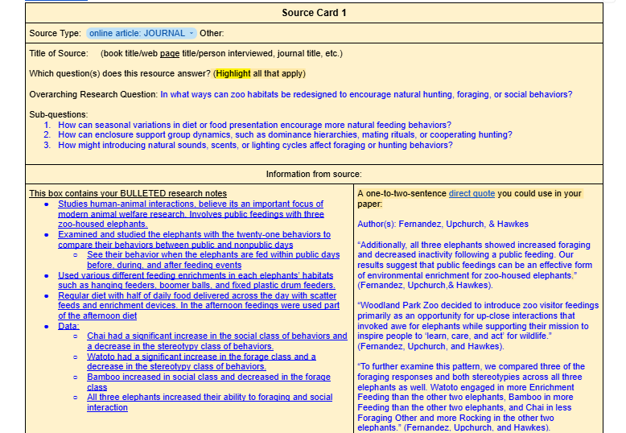

Zoo Case Study (November-December 2025)

This research case study focused on how zoo habitats can be redesigned to encourage more natural animal behavior through environmental enrichment and habitat complexity. The goal of this project was to analyze how zoos support animal behaviors such as hunting, foraging, and social interaction.
Tools Used
- Research and source analysis
- Academic writing
- Integrating textual evidence
- Analyzing animal behavior studies
Experience
During the research the main question for this project was: In what ways can zoo habitats be redesigned to encourage natural hunting, foraging, and social behavior? For my answer, I analyzed multiple research studies involving zoo animals such as elephants, black bears, and large carnivores. These studies focused on enrichment systems, feeding structures, social interaction and environmental complexity. One of the main concepts I researched was how enrichment tools can help animals practice natural hunting behaviors. Research from Cremer et al. explained how large Cariniores used Enrichment items such as “bungee ropes, artificial prey, and feeding poles” to create hunting-like characteristics. These tools were to encourage animals to jump, climb, and use their strength in ways similar to their natural habits in the wild. I also researched how feeding Enrichment affects social interaction and foraging behavior. In studies involving elephants, researchers found that enrichment devices, such as hanging feeders and scatter feeding increased social activity and encouraged more natural feeding behaviors. Another important research finding involved habitat complexity for black bears. Research showed that giving animals access to multiple habitat areas reduced repetitive behaviors and increased natural foraging activity. These findings demonstrated how environmental design directly impacts animal behavior.

Challenges
One of the biggest challenges in this project was organizing large amounts of scientific research into clear explanations that connected back to my research question. Many of the studies used technical language and focused on different species, so I had to carefully analyze how each example related to hunting, foraging or social behavior. Another challenge was learning how to properly combine my evidence into my writing instead of only summarizing information. I worked on improving my writing by explaining why each piece of evidence was important and how it supported my argument.
Habits of Mind
- Persistence - worked through difficult scientific research and technical language
- Critical thinking - analyzed how evidence connected to animal behavior
- Problem solving - organized multiple studies into one focused argument
Outcome & Reflecting
This project helped me better understand all the important characteristics needed for designing zoo habitats for specific animals and their natural instincts. Through my research, I learned how enrichment can improve animal health, reduce stress behaviors, and encourage more natural activity. Overall this case study strengthened my research and writing skills while also teaching me how environmental design can positively impact animal welfare.
You’ve reached the bottom! This is all I have for now. If you have any questions feel free to ask me!
 nylia.vang1@gmail.com
nylia.vang1@gmail.com